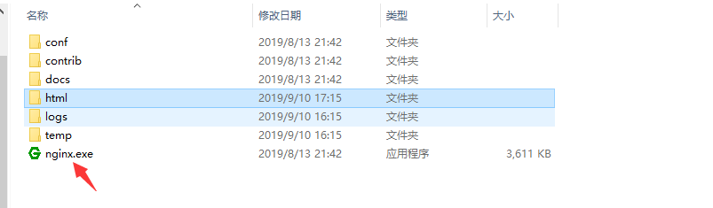

环境：
1、ionic
2、angular-cli
开发
1、CTRL C + CTRL V
2、图片路径的问题
使用‘assets/xxxxx.jpg’,而不使用‘../../assets/xxxxx.jpg’，因为打包后的目录如下：
服务器上图片会报404错误。
3、打包问题
打包命令： ionic build 打包完成后发现大小30M，我的妈呀，这肯定不行
生产版本：ionic bulid --prod 大小减少很多
4、打包完成之后，可以先本地跑一下，nginx for windows不错的选择
打包完成的文件全部拖到niginx/html 目录下
点击nginx.exe启动服务

然后打开网页访问localhost看看。
5、但是刷新页面会404，至于什么原因网上可以查阅到。
解决：
app.module.ts 替换
分清楚系统之后就可以安装nginx了。
2.apt-get
-- sudo apt-get install nginx过程会让选一个Y同意占用内存。
3.如果出现无法定位nginx包，进行如下操作：
-- sudo apt-get update4.更新完成之后，安装nginx
-- sudo apt-get install nginx
5、配置conf
安装完成后的目录是 /etc/nginx
进入conf.d
新建一个文件作为配置文件,名字随意，我已经新建好了，看一下文件内容参考一下即可
几个修改的地方，默认的端口号；访问的名字ip/域名； 指向的文件目录，试一下就知道了。
服务器不同可能还需要开端口权限，防火墙等。
访问成功：